감정평가사-1차-1교시(구) (2015-06-27 기출문제)
1과목: 민법(총칙,물권)
1. 관습법과 사실인 관습에 관한 설명으로 옳지 않은 것은? (다툼이 있으면 판례에 따름)
- 관습법이 되기 위해서는 사회구성원의 법적 확신이 필요하다.
- 사실인 관습은 법령으로서의 효력이 없는 단순한 관행에 지나지 않으므로 법률행위 당사자의 의사를 보충하는 수단이 될 수 없다.
- 여성은 종중의 구성원이 될 자격이 없다는 종래의 관습에 법적 효력은 인정되지 않는다.
- 온천에 관한 권리는 관습법상 권리가 아니다.
- 관습법의 존부는, 법원이 알 수 없는 경우를 제외 하고는, 당사자의 주장ㆍ증명을 기다리지 않고 법원이 직권으로 이를 확정하여야 한다.
(정답률: 알수없음)

2. 신의칙에 관한 설명으로 옳지 않은 것은? (다툼이 있으면 판례에 따름)
- 신의칙 위반 여부는 당사자의 주장이 없더라도 법원이 직권으로 판단할 수 있다.
- 부동산 점유자가 취득시효완성 후에 그 사실을 모르고 소유자에게 당해 토지에 관하여 어떠한 권리도 주장하지 않기로 하였는데, 나중에 시효완성을 주장하는 것은 특별한 사정이 없는 한 신의칙에 반한다.
- 법률행위가 법령에 위반되어 무효임을 알면서도 그 법률행위를 한 자가 나중에 강행법규 위반을 이유로 무효를 주장하더라도 신의칙에 반하지 않는다.
- 매매계약체결 후 9년이 지났고 시가가 올랐다는 사정만으로 매수인의 소유권 이전등기절차 이행청구가 신의칙에 위배된다고 할 수 없다.
- 부동산 거래에 있어 신의칙상 상대방에게 고지의무의 대상이 되는 것은 법령의 규정뿐이고, 널리 계약상, 관습상 또는 조리상의 일반원칙에 의해서는 인정될 수 없다.
(정답률: 알수없음)
3. 민법상 제한능력자에 관한 설명으로 옳지 않은 것은?
- 미성년자의 취소할 수 있는 단독행위는 추인이 있을 때까지 상대방이 거절할 수 있다.
- 피성년후견인이 일용품을 구입한 경우 성년후견인은 이를 취소할 수 없다.
- 가정법원은 성년후견개시의 심판뿐 아니라 한정후견개시의 심판을 할 때에도 본인의 의사를 고려하여야 한다.
- 특정후견은 본인의 의사에 반하여 할 수 없다.
- 가정법원이 피성년후견인에 대해 한정후견개시의 심판을 할 때에는 종전의 성년후견의 종료 심판을 할 필요가 없다.
(정답률: 알수없음)
4. 비법인사단 및 재단에 관한 설명으로 옳지 않은 것은? (다툼이 있으면 판례에 따름)
- 비법인사단의 대표자가 총유물의 관리ㆍ처분과 무관한 대외적 거래행위에 관하여 사원총회의 결의를 거치도록 한 정관 규정에 위반하여 그러한 거래행위를 한 경우, 상대방이 그와 같은 대표권 제한 사실을 알 수 없었다면 그 거래행위는 유효하다.
- 규약에 달리 정한 바가 없으면, 종중이 그 명의로 총유재산에 대한 보존행위로서 소송을 하기 위해서 종중총회의 결의를 거쳐야 하는 것은 아니다.
- 비법인사단에 대하여는 법인격을 전제로 하는 것을 제외하고는 사단법인에 관한 민법규정을 유추 적용한다.
- 매매계약에 의하여 부담하고 있는 채무의 존재를 인식하고 있다는 뜻을 표시함에 불과한 소멸시효 중단사유로서의 승인은 총유물의 관리ㆍ처분행위라고 볼 수 없다.
- 비법인재단의 경우에도 대표자가 있는 때에는 재단명의로 그 재단에 속하는 부동산의 등기를 할수 있다.
(정답률: 알수없음)
5. 대리에 관한 설명으로 옳은 것은? (다툼이 있으면 판례에 따름)
- 임의대리인은 행위능력자여야 한다.
- 대리인의 법률행위의 효과는 본인에게 귀속되므로 의사표시의 하자의 유무는 본인을 기준으로 판단한다.
- 복대리인은 대리인이 선임한 자로서 본인의 대리인이 아니다.
- 대리인은 본인의 허락을 얻어 본인을 위하여 자기와 법률행위를 할 수 있다.
- 권한을 넘은 표현대리의 규정은 법정대리에는 적용되지 않는다.
(정답률: 알수없음)
6. 권리의 객체에 관한 설명으로 옳지 않은 것은?(다툼이 있으면 판례에 따름)
- 주물과 종물의 법리는 물건 상호간에 적용되고, 권리 상호간에는 적용되지 않는다.
- 천연과실은 그 원물로부터 분리하는 때에 이를 수취할 권리자에게 속한다.
- 독립된 부동산으로서의 건물이라고 하기 위하여는 최소한의 기둥과 지붕 그리고 주벽이 갖추어져야 한다.
- 종물은 주물의 처분에 따른다는 민법규정은 임의 규정이다.
- 명인방법을 갖춘 수목의 경우에는 토지와 독립한 거래의 객체가 된다.
(정답률: 알수없음)
7. 착오로 인한 의사표시에 관한 설명으로 옳지 않은 것은? (다툼이 있으면 판례에 따름)
- 채무자의 동일성에 관한 물상보증인의 착오는 법률행위 내용의 중요부분에 관한 착오에 해당하지 않는다.
- 착오로 의사표시를 취소한 자는 이로 인하여 상대방에 대해 불법행위책임을 지지 않는다.
- 착오로 인하여 표의자가 경제적인 불이익을 입은 것이 아니라면 착오를 이유로 취소할 수 없다.
- 특별한 사정이 없는 한 목적물의 시가에 관한 착오를 이유로 매매계약을 취소할 수 없다.
- 동기의 착오가 상대방에 의해 유발된 경우 동기가 표시되지 않더라도 의사표시의 취소 사유인 착오에 해당할 수 있다.
(정답률: 알수없음)
8. 의사표시에 관한 설명으로 옳지 않은 것은? (다툼이 있으면 판례에 따름)
- 의사표시자가 그 통지를 발송한 후 사망하여도 의사표시의 효력에 영향을 미치지 않는다.
- 통정허위표시의 무효로 대항할 수 없는 제3자는 허위표시의 당사자와 그의 포괄승계인 이외의 자로서 허위표시행위를 기초로 하여 새로운 이해관계를 맺은 자를 말한다.
- 진의 아닌 의사표시에 있어서의 '진의'란 특정한 내용의 의사표시를 하고자 하는 표의자의 생각을 말하는 것이지 표의자가 진정으로 마음 속에서 바라는 사항을 뜻하는 것은 아니다.
- 통정한 허위표시에 의하여 외형상 형성된 법률관계로 생긴 채권을 가압류한 자는 통정허위표시의 무효로 대항할 수 없는 제3자에 해당한다.
- 제3자가 통정허위표시의 무효에 대항하기 위해서는 선의ㆍ무과실이어야 한다.
(정답률: 알수없음)
9. 부재자에 관한 설명으로 옳지 않은 것은? (다툼이 있으면 판례에 따름)
- 법원이 선임한 재산관리인이 부재자의 재산에 대해 보존행위를 함에는 법원의 허가를 얻어야 한다.
- 부재자가 재산관리인을 선임하였으나 부재자의 생사가 분명하지 않은 경우, 법원은 청구권자의 청구에 의하여 재산관리인을 개임할 수 있다.
- 재산관리인의 처분행위에 대한 법원의 허가는 장래의 처분행위뿐만 아니라 과거의 처분행위에 대한 추인을 위해서도 할 수 있다.
- 법원이 선임한 재산관리인이 부재자의 사망을 확인했더라도 법원에 의해 선임결정이 취소되지 않는 한 재산관리인은 계속하여 권한을 행사할 수 있다.
- 재산관리인은 보수청구권을 가지며, 재산관리로 인하여 과실 없이 입은 손해에 대해 배상을 청구할 수 있다.
(정답률: 알수없음)
10. 사회질서에 반하는 법률행위에 관한 설명으로 옳지 않은 것은? (다툼이 있으면 판례에 따름)
- 어떠한 일이 있어도 이혼하지 않겠다는 약속은 무효이다.
- 법정에 나와 증언할 것을 조건으로 대가를 지급하기로 약정한 경우, 그 대가의 내용이 통상적으로 용인될 수 있는 수준을 초과하면 그 약정은 무효가 된다.
- 이중매매임을 알고 부동산을 매수한 것만으로 제2매매가 사회질서에 반하여 무효인 것은 아니다.
- 양도소득세의 일부를 회피할 목적으로 매매계약서에 실제로 거래한 가액보다 낮은 금액을 매매대금으로 기재한 경우에 그 매매계약은 무효이다.
- 반사회질서의 법률행위는 당사자가 그 무효임을 알고 추인하여도 새로운 법률행위를 한 효과가 생길 수 없다.
(정답률: 알수없음)
11. 무권대리에 관한 설명으로 옳지 않은 것은? (다툼이 있으면 판례에 따름)
- 무권대리행위에 대한 본인의 추인은 재판상ㆍ재판 외에서 묵시적으로도 할 수 있다.
- 무권대리행위는 추인이나 거절 전에는 유동적 무효이다.
- 본인이 무권대리행위의 추인을 거절한 후에는 다시 추인할 수 없다.
- 매매계약을 체결한 무권대리인으로부터 매매대금의 일부를 본인이 수령한 경우 특별한 사정이 없는 한 본인이 무권대리행위를 묵시적으로 추인한 것으로 본다.
- 무권대리인의 상대방에 대한 책임은 과실책임이다.
(정답률: 알수없음)
12. 형성권에 관한 설명으로 옳지 않은 것은? (다툼이 있으면 판례에 따름)
- 형성권의 효력 발생에는 상대방의 동의나 승낙을 요하지 않는다.
- 형성권의 행사는 단독행위이므로 조건은 붙일 수 없음이 원칙이나, 계약의 정지조건부 해제는 인정된다.
- 공유물분할청구권은 형성권이다.
- 형성권은 반드시 재판상 행사해야 한다.
- 취소할 수 있는 법률행위의 취소권의 존속기간은 제척기간이다.
(정답률: 알수없음)
13. 법률행위에 관한 설명으로 옳지 않은 것은? (다툼이 있으면 판례에 따름)
- 어떠한 의사표시가 진의 아닌 의사표시로서 무효라고 주장하는 자는 그에 대한 증명책임을 진다.
- 불공정한 법률행위에 해당하는지는 법률행위가 이루어진 시점을 기준으로 약속된 급부와 반대급부 사이의 객관적 가치를 비교 평가하여 판단해야 한다.
- 대리인에 의한 법률행위가 불공정한 법률행위에 해당하는지 판단함에 있어서 궁박은 대리인을 기준으로 한다.
- 부동산 매매계약에 있어 쌍방 당사자가 모두 X토지를 계약의 목적물로 삼았으나 그 목적물의 지번 등에 관하여 둘 다 착오를 일으켜 계약서에는 Y토지로 표시한 경우, 매수인은 X토지에 대해 이전 등기를 청구할 수 있다.
- 특별한 사정이 없는 한, 착오를 이유로 법률행위를 취소하려면 표의자에게 중대한 과실이 없어야 한다.
(정답률: 알수없음)
14. 표현대리에 관한 설명으로 옳지 않은 것은? (다툼이 있으면 판례에 따름)
- 대리권 소멸 후의 표현대리가 인정되는 경우, 그 표현대리의 권한을 넘은 대리행위가 있을 때 권한을 넘은 표현대리가 성립할 수 있다.
- 대리인이 대리권 소멸 후 복대리인을 선임하여 복 대리인으로 하여금 대리행위를 하도록 한 경우, 대리권 소멸 후의 표현대리가 성립할 수 없다.
- 권한을 넘은 표현대리에 있어 '정당한 이유'의 존부는 대리행위 당시의 제반 사정을 객관적으로 관찰하여 판단하여야 한다.
- 본인이 대리권 수여표시에 의한 표현대리 또는 대리권 소멸 후의 표현대리로 인하여 책임을 지기 위해서는 상대방이 선의ㆍ무과실이어야 한다.
- 교회의 대표자가 교인총회의 결의를 거치지 아니하고 교회 재산을 처분한 행위에 대하여 권한을 넘은 표현대리에 관한 규정을 준용할 수 없다.
(정답률: 알수없음)
15. 무효와 취소에 관한 설명으로 옳지 않은 것은?
- 무효인 법률행위는 취소할 수 없다.
- 취소할 수 있는 법률행위의 추인은 취소의 원인이 소멸된 후에 하여야 효력이 있다.
- 「민법」상 법률행위의 일부가 무효인 때에는 전부를 무효로 함이 원칙이다.
- 취소할 수 있는 법률행위는 취소권자가 추인할 수 있고, 추인 후에는 취소할 수 없다.
- 취소권은 법률행위를 추인할 수 있는 날로부터 3년 내에 행사하여야 한다.
(정답률: 알수없음)
16. 법률행위의 부관에 관한 설명으로 옳지 않은 것은? (다툼이 있으면 판례에 따름)
- 임대인이 생존하는 동안 임대하기로 하는 계약은 기한부 법률행위이다.
- 해제조건부 법률행위에서 그 조건이 이미 성취할 수 없는 것인 경우 그 법률행위는 무효로 한다.
- 조건의 성취로 인하여 불이익을 받을 당사자가 신의 성실에 반하여 조건의 성취를 방해한 경우, 조건이 성취된 것으로 의제되는 시점은 이러한 행위가 없었더라면 조건이 성취되었으리라고 추산되는 시점이다.
- 어느 법률행위에 어떤 조건이 붙어 있었는지 여부는 그 조건의 존재를 주장하는 자가 입증하여야 한다.
- 선량한 풍속 기타 사회질서에 위반한 조건이 붙은 법률행위는 무효로 한다.
(정답률: 알수없음)
17. 기간의 계산에 관한 설명으로 옳지 않은 것은?
- 2015년 6월 16일 오후 3시부터 10일간이라고 하면, 2015년 6월 26일(금) 24시에 기간이 만료한다.
- 2015년 4월 1일 오전 10시부터 6개월간이라고 하면, 2015년 10월 1일(목) 24시에 기간이 만료한다.
- 2015년 10월 1일 오전 0시부터 3개월간이라고 하면, 2015년 12월 31일(목) 24시에 기간이 만료한다.
- 2015년 6월 28일 오전 10시에 출생한 아이는 2034년 6월 27일(화) 24시에 성년이 된다.
- 정관에 달리 정함이 없다면, 2015년 4월 29일에 사단법인의 사원총회를 개최하기 위해서는 2015년 4월 22일(수) 24시까지 소집통지를 발송하여야 한다.
(정답률: 알수없음)
18. 법률행위가 아닌 것은?
- 지상권 설정의 합의
- 대리권의 수여
- 사단법인의 설립행위
- 동산의 가공
- 의사표시의 취소
(정답률: 알수없음)
19. 소멸시효와 제척기간에 관한 설명으로 옳은 것은?(다툼이 있으면 판례에 따름)
- 소멸시효와 제척기간 모두 중단과 정지가 인정된다.
- 소멸시효의 중단에 관한 규정은 취득시효에 준용한다.
- 소멸시효는 법률행위로 단축할 수 없다.
- 당사자가 본래의 소멸시효 기산일보다 뒤의 날짜를 기산일로 주장하는 경우 법원은 본래의 소멸시효 기산일을 기준으로 소멸시효를 계산하여야 한다.
- 제척기간은 소송상 당사자가 제척기간의 도과를 주장한 경우에 한하여 고려된다.
(정답률: 알수없음)
20. 소멸시효 중단에 관한 설명으로 옳은 것을 모두 고른 것은? (다툼이 있으면 판례에 따름)
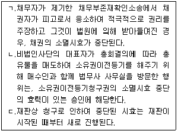
- ㄱ
- ㄴ
- ㄱ, ㄴ
- ㄱ, ㄷ
- ㄴ, ㄷ
(정답률: 알수없음)
21. 부동산 등기에 관한 설명으로 옳은 것은? (다툼이 있으면 판례에 따름)
- 등기에 공신력이 인정된다.
- 지상권 설정등기가 불법 말소된 경우 그 지상권은 소멸한다.
- 동일인 명의로 보존등기가 중복된 경우 후등기가 무효이다.
- 멸실된 건물의 보존등기를 그 대지 위에 신축한 건물의 보존등기로 유용할 수 있다.
- 매매를 원인으로 하여 甲에서 乙 앞으로 마쳐진 소유권이전등기에 대해 甲이 매매의 부존재를 이유로 그 말소를 청구하는 경우, 乙은 등기의 추정력을 주장할 수 없다.
(정답률: 알수없음)
22. 물권적 청구권에 관한 설명으로 옳지 않은 것은?(다툼이 있으면 판례에 따름)
- 甲의 물건을 乙이 불법 점유하는 경우 甲은 丙에게 그 소유권을 양도하면서 乙에 대한 소유물반환 청구권을 자신에게 유보할 수 없다.
- 소유자는 현재 점유하고 있지 않은 자를 상대로 소유물의 반환을 청구할 수 없다.
- 물권적 청구권은 점유권과 소유권 이외의 물권에 대하여도 인정된다.
- 소유권에 기한 물권적 청구권은 소멸시효에 걸리지 않는다.
- 간접점유자는 직접점유자가 점유의 침탈을 당한 때에는 그 물건의 반환을 청구할 수 없다.
(정답률: 알수없음)
23. 부동산 물권변동에 관한 설명으로 옳지 않은 것은?(다툼이 있으면 판례에 따름)
- 甲이 매매를 원인으로 하는 소유권이전등기소송에서 승소의 확정판결을 얻었더라도 이전등기 전에는 소유권을 취득하지 못한다.
- 재단법인의 설립을 위해 부동산을 출연한 경우, 출연자와 재단법인 사이에서도 그 부동산은 소유권이전등기 없이는 재단법인의 소유가 되지 않는다.
- 甲이 건물을 신축한 후 乙에게 양도하고 乙 명의로 보존등기를 한 경우 乙은 건물의 소유권을 취득한다.
- 공용징수에 의한 부동산 소유권의 취득에는 등기를 요하지 않는다.
- 甲이 乙에게 부동산을 매도하고 소유권이전등기를 한 후 계약을 해제하였으나 그 말소등기 전에 乙이 선의의 丙에게 매도하고 이전등기한 경우, 甲은 丙에게 등기의 말소를 청구할 수 없다.
(정답률: 알수없음)
24. 1990년 乙이 甲으로부터 토지를 매수하여 등기는 이전받지 아니한 채 인도받고 점유ㆍ사용하다가, 2003년 이를 丙이 乙로부터 매수하여 이전등기 없이 인도받고 점유ㆍ사용하고 있다. 옳은 설명을 모두 고른 것은? (다툼이 있으면 판례에 따름)
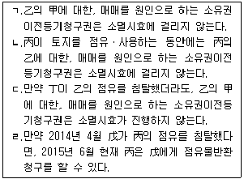
- ㄱ, ㄴ
- ㄱ, ㄹ
- ㄴ, ㄷ
- ㄷ, ㄹ
- ㄱ, ㄴ, ㄷ
(정답률: 알수없음)
25. 중간생략등기에 관한 설명으로 옳지 않은 것은?(다툼이 있으면 판례에 따름)
- 중간생략등기의 합의는 순차적 또는 묵시적으로 할 수 있다.
- 중간생략등기의 합의가 있더라도 최초매도인과 최종매수인 사이에 매매계약이 체결되었다고 볼 수는 없다.
- 중간생략등기의 합의가 있다고 하여 최초매도인이 매매계약상 상대방에 대하여 가지는 대금청구권의 행사가 제한되는 것은 아니다.
- 관계당사자 전원의 의사합치가 없어도 중간자의 동의가 있다면 최종매수인은 최초매도인을 상대로 직접 중간생략등기를 청구할 수 있다.
- 중간생략등기가 당사자 사이에 적법한 등기원인에 기하여 이미 경료되었다면, 중간생략등기의 합의가 없었음을 들어 그 등기의 말소를 구할 수는 없다.
(정답률: 알수없음)
26. 소유권 취득에 관한 설명으로 옳지 않은 것은?(다툼이 있으면 판례에 따름)
- 무주의 부동산도 선점의 대상이 된다.
- 부동산 매수인이 매도인의 부동산 처분권한을 조사했더라면 그 처분권한이 없음을 알 수 있었음에도 이를 조사하지 않은 경우, 매수인의 등기부취득 시효는 완성되지 않는다.
- 부합한 동산의 주종을 구별할 수 없는 때에는 동산의 소유자는 부합 당시의 가액의 비율로 합성물을 공유한다.
- 타인의 토지 기타 물건으로부터 발견된, 문화재가 아닌 매장물은 법률이 정한 바에 의하여 공고한 후 1년 내에 그 소유자가 권리를 주장하지 아니하면 그 토지 기타 물건의 소유자와 발견자가 절반 하여 취득한다.
- 타인의 권원에 의하여 부동산에 부합된 물건이 독립한 권리의 객체성을 상실하고 부동산의 구성부분이 된 경우, 그 부합물의 소유권은 부동산의 소유자에게 귀속된다.
(정답률: 알수없음)
27. 혼동으로 물권이 소멸하는 경우는? (다툼이 있으면 판례에 따름)
- 甲의 토지에 乙이 1번 저당권, 丙이 2번 저당권을 취득한 후 乙이 토지 소유권을 취득하는 경우
- 甲의 건물에 乙이 저당권을 취득한 다음 그 건물을 매수하여 소유권이전등기를 마쳤는데, 그 매매 계약이 원인무효임이 밝혀진 경우
- 甲의 건물에 乙이 1번 저당권, 丙이 2번 저당권을 취득한 후 丙이 건물 소유권을 취득하는 경우
- 甲의 토지에 乙이 지상권을 취득하고, 그 지상권 위에 丙이 저당권을 취득한 후 乙이 토지 소유권을 취득하는 경우
- 甲의 토지에 대한 乙의 지상권 위에 丙이 1번 저당권, 丁이 2번 저당권을 취득한 뒤 丙이 乙의 지상권을 취득하는 경우
(정답률: 알수없음)
28. 「민법」상 공동소유에 관한 설명으로 옳지 않은 것은? (특약은 고려하지 않음)
- 공유물의 임대는 공유자의 과반수로 결정한다.
- 공유자는 내부적 관계에서 지분의 비율로 공유물의 관리비용 기타 의무를 부담한다.
- 조합재산이 아닌 합유물을 처분하기 위해서는 합유자 전원의 동의가 있어야 한다.
- 합유물의 지분을 처분하기 위해서는 합유자 전원의 동의가 있어야 한다.
- 총유물의 처분은 물론 관리도 사원총회의 결의에 의해야 한다.
(정답률: 알수없음)
29. 점유자와 회복자의 관계에 관한 설명으로 옳지 않은 것은? (다툼이 있으면 판례에 따름)
- 타주점유자가 그의 책임있는 사유로 점유물을 멸실 또는 훼손한 때에는 그가 선의로 점유했더라도 손해의 전부를 배상하여야 한다.
- 자신에게 과실수취권을 포함하는 권원이 있다고 오신한 데 정당한 근거가 있는 점유자는 과실수취권이 있다.
- 선의의 점유자가 법률상 원인 없이 회복자의 건물을 점유ㆍ사용하고 이로 말미암아 회복자에게 손해를 입혔다면 그 점유ㆍ사용으로 인한 이득을 반환할 의무가 있다.
- 타인 소유물을 권원 없이 점유함으로써 얻은 사용 이익을 반환하는 경우, 악의의 점유자는 사용이익 뿐만 아니라 그 이자도 반환해야 한다.
- 점유자가 과실을 취득하였다면 통상의 필요비는 청구할 수 없다.
(정답률: 알수없음)
30. 선의취득에 관한 설명으로 옳지 않은 것은? (다툼이 있으면 판례에 따름)
- 토지는 선의취득의 대상이 되지 못한다.
- 점유개정에 의해 간접점유를 취득하였더라도 선의취득을 할 수 없다.
- 선의취득자는 임의로 선의취득의 효과를 거부하고 종전 소유자에게 동산을 반환받아 갈 것을 요구할 수 없다.
- 점유보조자가 횡령한 동산은 민법 제250조의 도품ㆍ유실물에 해당하지 않는다.
- 양수인이 물권적 합의 시점에 선의ㆍ무과실이면, 이후 인도받을 때에 악의이거나 과실이 있더라도 선의취득이 인정된다.
(정답률: 알수없음)
31. 주위토지통행권에 관한 설명으로 옳은 것은?(다툼이 있으면 판례에 따름)
- 통행권자가 통행지 소유자에게 손해보상의 지급을 게을리 하면 통행권이 소멸한다.
- 주위토지통행권의 범위는 현재의 토지의 용법은 물론 장래의 이용 상황도 미리 대비하여 정해야 한다.
- 통행권자가 통행지를 배타적으로 점유하는 경우 통행지 소유자는 통행지의 인도를 청구할 수 있다.
- 주위토지통행권이 인정되는 경우 통행지 소유자는 원칙적으로 통로개설 등 적극적인 작위의무를 부담한다.
- 동일인 소유의 토지의 일부가 양도되어 공로에 통하지 못하는 토지가 생긴 경우, 포위된 토지를 위한 통행권은 일부 양도 전의 양도인 소유의 종전 토지뿐만 아니라 다른 사람 소유의 토지에 대하여도 인정된다.
(정답률: 알수없음)
32. 물권변동에 관한 설명으로 옳지 않은 것은? (다툼이 있으면 판례에 따름)
- 수공업자가 타인의 동산에 가공을 한 경우 가공으로 인한 가액의 증가가 원재료의 가액보다 현저히 다액인 경우, 가공물은 그 수공업자의 소유로 한다.
- 부동산등기법상 무효인 이중등기를 근거로 해서도 등기부취득시효가 완성될 수 있다.
- 인도는 법률행위로 인한 부동산 소유권취득을 위한 요건이 아니다.
- 타인의 임야에 권원 없이 심은 입목의 소유권은 임야소유자에게 속한다.
- 경매 대상 토지에 채무자 아닌 자의 소유인 동산이 설치되어 있는 경우, 경매의 매수인은 그 동산을 선의취득할 수 있다.
(정답률: 알수없음)
33. 부동산 점유취득시효에 관한 설명으로 옳지 않은 것은? (다툼이 있으면 판례에 따름)
- 점유취득시효가 완성된 경우 점유자가 시효기간 중에 수취한 과실은 소유자에게 반환할 필요가 없다.
- 점유자의 점유가 불법이라고 주장하는 소유자로부터 이의를 받은 사실이 있다 하더라도 그러한 사실만으로 곧 평온ㆍ공연한 점유가 부정되지 않는다.
- 취득시효 진행 중에 소유자가 소유권을 제3자에게 양도하고 등기를 이전한 후 시효가 완성된 경우, 점유자는 양수인에게 시효 완성을 이유로 소유권이전등기를 청구할 수 있다.
- 종중 부동산이 종중 대표자에게 적법하게 명의신탁되었는데 그 부동산에 대해 제3자의 점유에 의한 취득시효가 완성된 후 제3자 명의의 등기 전에 명의신탁이 해지되어 등기명의가 종중에게 이전된 경우, 특별한 사정이 없는 한 점유자는 종중에 대해 시효 완성을 주장할 수 있다.
- 점유취득시효가 완성된 경우, 점유자는 등기 없이는 그 부동산의 소유권을 주장할 수 없다.
(정답률: 알수없음)
34. 2014년 丙 소유 X토지를 취득하고 싶은 甲은 그 친구 乙과 X토지의 취득에 관한 명의신탁약정을 맺고 乙에게 X토지를 매수하기 위한 자금을 제공하면서 乙 명의로 丙과 계약하도록 하였다. 이에 乙은 그 사실을 알지 못하는 丙으로부터 X토지를 매수하여 자기 앞으로 이전등기를 마쳤다. 다음 설명으로 옳지 않은 것은? (다툼이 있으면 판례에 따름)
- 甲과 乙의 명의신탁약정은 무효이다.
- 乙은 甲으로부터 받은 X토지 매수대금을 甲에게 부당이득으로 반환할 의무가 있다.
- 만약 丙이 명의신탁약정의 존재를 알았다면 X토지에 관한 물권변동은 무효이다.
- 만약 乙이 완전한 소유권을 취득했음을 전제로 사후적으로 甲과 매수자금반환의무의 이행에 갈음하여 X토지를 양도하기로 약정하고 甲 앞으로 소유권이전등기를 마쳤다면, 그 등기는 원칙적으로 유효하다.
- 만약 甲과 乙의 명의신탁약정 및 乙 명의의 등기가 「부동산 실권리자 명의등기에 관한 법률」의시행 전에 이루어지고, 같은 법 소정의 유예기간 내에 甲 앞으로 등기가 되지 않았다면, 乙은 甲에게 X토지를 부당이득으로 반환할 의무가 없다.
(정답률: 알수없음)
35. 「민법」상 공유에 관한 설명으로 옳지 않은 것은? (특약은 고려하지 않고, 다툼이 있으면 판례에 따름)
- 각 공유자는 자기 지분을 자유롭게 처분할 수 있다.
- 소수지분권자가 다른 공유자의 동의 없이 공유물을 배타적으로 점유하는 경우, 다른 소수지분권자는 그 점유자를 상대로 보존행위에 기하여 공유물의 인도를 청구할 수 없다.
- 공유자 1인이 포기한 지분은 다른 공유자에게 각 지분의 비율로 귀속한다.
- 분할에 관한 협의가 성립한 후에 공유물분할소송을 제기하는 것은 허용되지 않는다.
- 공유자는 다른 공유자가 공유물 분할로 인하여 취득한 물건에 대하여 그 지분의 비율로 매도인과 동일한 담보책임이 있다.
(정답률: 알수없음)
36. 법정지상권에 관한 설명으로 옳지 않은 것은?(다툼이 있으면 판례에 따름)
- 대지와 건물이 동일한 소유자에 속한 경우에 건물에 전세권을 설정한 때에는 그 대지소유권의 특별승계인은 전세권설정자에 대하여 지상권을 설정한 것으로 본다.
- 토지공유자 중 1인이 다른 공유자 지분 과반수의 동의를 얻어 건물을 건축한 후 토지와 건물의 소유자가 달라진 경우, 관습상의 법정지상권이 성립 된다.
- 미등기건물을 그 대지와 함께 매도하여 대금이 완납되었으나 건물이 미등기인 관계로 대지에 관하여만 매수인 앞으로 소유권이전등기가 경료된 경우, 매도인에게 관습상의 법정지상권은 인정되지 않는다.
- 관습상 법정지상권이 성립하려면 토지와 그 지상 건물이 애초부터 동일인의 소유에 속하였을 필요는 없고, 그 소유권이 유효하게 변동될 당시에 동일인이 토지와 그 지상 건물을 소유하였던 것으로 족하다.
- 토지와 건물의 소유자 甲으로부터 乙이 건물을 매수하여 취득한 경우 乙이 건물 소유를 위해 甲과 대지의 임대차계약을 체결하였다면, 관습상 법정지상권을 포기한 것으로 본다.
(정답률: 알수없음)
37. 지상권에 관한 설명으로 옳지 않은 것은?
- 수목의 소유를 목적으로 한 지상권의 최단존속기간은 30년이다.
- 토지의 지상권자는 타인에게 그 권리를 양도하거나 그 권리의 존속기간 내에서 그 토지를 임대할 수 있다.
- 지상권이 소멸한 경우에 지상권설정자가 상당한 가액을 제공하여 그 토지에 현존하는 공작물이나 수목의 매수를 청구한 때에는 지상권자는 정당한 이유없이 이를 거절하지 못한다.
- 타인의 토지의 지하 또는 지상의 공간을 상하의 범위를 정하여 사용할 수 있는 권리를 물권으로 취득하는 것도 허용된다.
- 지상권자가 2년 이상의 지료를 지급하지 아니한 때에는 지상권설정자는 지상권의 소멸을 청구할 수 있으나, 당사자의 약정으로 그 기간을 단축할 수 있다.
(정답률: 알수없음)
38. 전세권에 관한 설명으로 옳지 않은 것은? (다툼이 있으면 판례에 따름)
- 전세권자는 전세권설정계약에 다른 약정이 없는 한 전세권설정자의 동의 없이 전전세를 할 수 있다.
- 전세권이 성립한 후 전세목적물의 소유권이 이전된 경우, 전세권은 전세권자와 목적물의 소유권을 취득한 신 소유자 사이에서 동일한 내용으로 존속 한다.
- 전세권이 갱신없이 존속기간이 만료되면 그 용익 물권적 권능은 전세권설정등기의 말소 없이도 소멸한다.
- 전세권자는 전세권설정자에게 목적물의 현상을 유지하기 위하여 지출한 필요비의 상환을 청구할 수있다.
- 건물의 일부에 대하여 전세권이 설정되어 있는 경우, 그 전세권의 목적이 된 부분이 구조상 또는 이용상 독립성이 없어 그 부분만의 경매신청이 불가능하다고 하더라도, 이를 이유로 전세권의 목적물이 아닌 나머지 건물부분에 대하여 그 전세권에 기한 경매신청을 할 수 없다.
(정답률: 알수없음)
39. 유치권에 관한 설명으로 옳은 것은? (다툼이 있으면 판례에 따름)
- 채권자가 불법으로 점유를 취득한 경우에도 유치권이 성립한다.
- 채권자가 유치권을 행사하면 채권의 소멸시효는 중단된다.
- 건물임차인은 권리금반환청구권에 기하여 임차건물에 대하여 유치권을 주장할 수 없다.
- 유치권에는 우선변제적 효력이 없으므로, 유치권자는 채권의 변제를 받기 위하여 유치물을 경매할 수 없다.
- 공사대금채권에 기하여 유치권을 행사하는 자가 채무자의 승낙 없이 유치물의 보존에 필요한 범위내에서 유치물인 주택에 거주하며 사용하였다면, 특별한 사정이 없는 한 차임에 상당한 이득을 소유자에게 반환할 의무가 없다.
(정답률: 알수없음)
40. 저당권에 관한 설명으로 옳지 않은 것은? (다툼이 있으면 판례에 따름)
- 저당권설정자는 현재 저당부동산의 소유자가 아니라면 피담보채무가 소멸하더라도 저당권의 말소를 청구할 수 없다.
- 저당권은 경매에서의 매각으로 인하여 소멸한다.
- 저당권은 피담보채권과 분리하여 타인에게 양도하거나 다른 채권의 담보로 하지 못한다.
- 저당권자가 물상대위를 통하여 우선변제를 받기 위해서는 저당권설정자가 받을 가치 변형물을 그 지급 또는 인도 전에 압류하여야 한다.
- 저당권자가 물상대위권을 행사하지 아니한 경우, 저당목적물의 변형물로부터 이득을 얻은 다른 채권자에 대하여 부당이득반환을 청구할 수 없다.
(정답률: 알수없음)
2과목: 경제학원론
41. 다음과 같이 시장수요곡선(D)과 시장공급곡선(S)이 주어졌을 때, 정부가 생산자에게 세금을 부과하여 공급곡선이 S에서 S'로 이동하였다. 다음 중 옳은 것은? (단, 시장수요곡선은 완전 탄력적이며, 시장공급곡선은 우상향한다.)
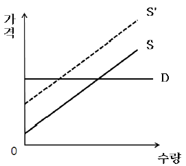
- 모든 세금은 소비자가 부담한다.
- 균형거래량은 변화가 없다.
- 생산자잉여는 감소한다.
- 소비자잉여는 증가한다.
- 정부의 조세수입은 발생하지 않는다.
(정답률: 알수없음)
42. 완전경쟁시장에서 거래되는 X재에 대해 시장균형 가격보다 낮은 수준에서 가격상한제를 실시하였다. 이로 인해 나타날 수 있는 일반적인 현상으로 옳은 것을 모두 고른 것은? (단, X재는 수요와 공급의 법칙을 따른다.)
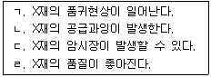
- ㄱ, ㄴ
- ㄱ, ㄷ
- ㄴ, ㄷ
- ㄴ, ㄷ, ㄹ
- ㄱ, ㄴ, ㄷ, ㄹ
(정답률: 알수없음)
43. X재의 수요함수와 공급함수가 각각 QD=100-2P, QS=-80+4P이다. 시장균형에서 소비자잉여(CS)와 생산자잉여(PS)는? (단, QD는 수요량, QS는 공급량, P는 가격이다.)
- CS=200, PS=400
- CS=400, PS=200
- CS=600, PS=200
- CS=600, PS=300
- CS=800, PS=400
(정답률: 알수없음)
44. X재의 수요함수와 공급함수가 각각 QD=200-2P, QS=100+3P이다. 시장균형에서 X재에 대한 수요의 가격탄력성은? (단, QD는 수요량, QS는 공급량, P는 가격이다. 수요의 가격탄력성은 절대값으로 표시한다.)
- 0.25
- 0.38
- 0.5
- 1.0
- 16.0
(정답률: 알수없음)
45. 甲의 효용함수는 U(x,y)=xy이고, X재와 Y재의 가격이 각각 1과 2이며, 甲의 소득은 100이다. 예산제약 하에서 甲의 효용을 극대화시키는 X재와 Y재의 소비량은? (단, 甲은 X재와 Y재만 소비하고 x는 X재의 소비량, y는 Y재의 소비량이다.)
- x=20, y=40
- x=30, y=35
- x=40, y=30
- x=50, y=25
- x=60, y=20
(정답률: 알수없음)
46. 기펜재(Giffen goods)에 관한 설명으로 옳은 것을 모두 고른 것은?
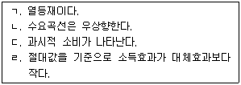
- ㄱ, ㄴ
- ㄱ, ㄷ
- ㄴ, ㄷ
- ㄴ, ㄷ, ㄹ
- ㄱ, ㄴ, ㄹ
(정답률: 알수없음)
47. 베이글과 크림치즈는 서로 보완재이고, 베이글과 베이컨은 서로 대체재이다. 베이글의 원료인 밀가루 가격의 급등에 따라 베이글의 생산비용이 상승하였을 때, 각 시장의 변화로 옳지 않은 것은? (단, 베이글, 크림치즈, 베이컨 모두 수요와 공급의 법칙을 따르며, 다른 조건은 일정하다.)
- 베이글의 가격은 상승한다.
- 크림치즈의 거래량은 감소한다.
- 크림치즈 시장의 생산자잉여는 감소한다.
- 베이컨의 판매수입은 증가한다.
- 베이컨 시장의 총잉여는 변함이 없다.
(정답률: 알수없음)
48. 효용극대화를 추구하는 소비자 甲의 효용함수는 U(x,y)=x+y이다. 甲의 무차별곡선에 관한 설명으로 옳지 않은 것은? (단, 甲은 X재와 Y재만 소비하고 x는 X재의 소비량, y는 Y재의 소비량이며, x, y는 양수이다.)
- 원점에서 멀리 있는 무차별곡선은 원점에서 가까이 있는 무차별곡선보다 선호된다.
- 무차별곡선은 우하향한다.
- 무차별곡선들은 서로 교차하지 않는다.
- 동일한 무차별곡선 상에서 한계대체율은 체감한다.
- 무차별곡선의 기울기는 모든 소비조합(consumption bundle)에서 동일하다.
(정답률: 알수없음)
49. 甲기업의 단기 총비용함수가 C=100+10Q일 때, 甲기업의 비용에 관한 설명으로 옳지 않은 것은? (단, Q는 양(+)의 생산량이다.)
- 고정비용은 100이다.
- 모든 생산량 수준에서 한계비용은 10이다.
- 생산량이 증가함에 따라 총비용은 증가한다.
- 생산량이 증가함에 따라 평균비용은 감소한다.
- 모든 생산량 수준에서 한계비용은 평균비용보다 크다.
(정답률: 알수없음)
50. 甲기업의 생산함수는 f(K,L)=K1/2L1/4이고, 산출물의 가격은 4, K의 가격은 2, L의 가격은 1이다. 이윤을 극대화하는 甲기업의 K와 L은 각각 얼마인가? (단, K와 L은 각각 자본, 노동 투입량을 나타내고, 생산물시장과 생산요소시장은 완전 경쟁시장이다.)
- K=1, L=1
- K=1, L=2
- K=2, L=2
- K=2, L=4
- K=4, L=2
(정답률: 알수없음)
51. 소득-여가 결정모형에서 효용극대화를 추구하는 甲의 노동공급에 관한 설명으로 옳은 것은? (단, 소득과 여가는 모두 정상재이며, 소득효과 및 대체효과의 크기 비교는 절대값을 기준으로 한다.)
- 시간당 임금이 상승할 경우, 대체효과는 노동공급 감소요인이다.
- 시간당 임금이 상승할 경우, 소득효과는 노동공급 증가요인이다.
- 시간당 임금이 하락할 경우, 소득효과와 대체효과가 동일하다면 노동공급은 감소한다.
- 시간당 임금이 하락할 경우, 소득효과가 대체효과보다 크다면 노동공급은 증가한다.
- 시간당 임금의 상승과 하락에 무관하게 소득과 여가가 결정된다.
(정답률: 알수없음)
52. 물류회사 甲은 A지역 내에서 근로자에 대한 수요독점자이다. 다음과 같은 식이 주어졌을 때 이윤극대화를 추구하는 甲이 책정하는 임금은? (단, 노동공급은 완전경쟁적이며, ω는 임금, L은 노동량이다.)
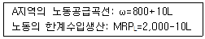
- 800
- 1,000
- 1,200
- 1,400
- 1,600
(정답률: 알수없음)
53. 한계비용이 양(+)의 값을 갖는 독점기업의 단기 균형에서 수요의 가격탄력성은? (단, 수요곡선은 우하향하는 직선이며, 독점기업은 이윤극대화를 목표로 한다.)
- 0이다.
- 0과 0.5 사이에 있다.
- 0.5와 1 사이에 있다.
- 1이다.
- 1보다 크다.
(정답률: 알수없음)
54. 독점기업 甲의 시장수요함수는 P=1,200-QD이고, 총비용함수는 C=Q2이다. 정부가 甲기업에게 제품 한 단위당 200원의 세금을 부과할 때, 甲기업의 이윤극대화 생산량은? (단, P는 가격, Q는 생산량, QD는 수요량이다.)
- 200
- 250
- 300
- 350
- 400
(정답률: 알수없음)
55. 한 지역에 동질의 휘발유를 판매하는 두 주유소 A, B가 꾸르노(Cournot)경쟁을 하고 있다. 이 지역의 휘발유에 대한 시장수요함수는 Q=8,000-2P이고, A와 B의 한계비용은 1,000원으로 일정하며, 고정비용은 없다. 이윤극대화를 추구하는 A와 B의 균형판매량은? (단, P는 가격, Q=QA+QB이며, QA, QB는 각각 A와 B의 판매량이다.)
- QA=1,500, QB=1,500
- QA=1,500, QB=2,500
- QA=2,000, QB=2,000
- QA=2,500, QB=2,500
- QA=3,000, QB=3,000
(정답률: 알수없음)
56. 생산측면에서 외부효과가 발생하는 경우에 관한설명으로 옳지 않은 것은?
- 부정적 외부효과가 존재할 경우, 시장균형거래량에서 사회적 한계비용이 시장균형가격보다 낮다.
- 긍정적 외부효과가 존재할 경우, 시장균형거래량은 사회적 최적거래량보다 작다.
- 부정적 외부효과가 존재할 경우, 경제적 순손실(자중손실)이 발생한다.
- 긍정적 외부효과가 존재할 경우, 경제적 순손실(자중손실)이 발생한다.
- 외부효과는 한 사람의 행위가 제3자의 경제적 후생에 영향을 미치고, 그에 대한 보상이 이루어지지 않을 때 발생한다.
(정답률: 알수없음)
57. 다음 표는 소비의 배제성과 경합성의 존재 유무에 따라 재화를 분류하고 있다. 다음 표에서 에 해당하는 재화로 옳은 것은?
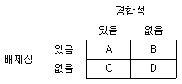
- 사적(私的) 재화
- 유료 도로
- 국방서비스
- 유료 케이블 TV
- 공해(公海) 상의 물고기
(정답률: 알수없음)
58. A국, B국, C국의 소득분위별 소득점유비중이 다음과 같다. 소득분배에 관한 설명으로 옳은 것은? (단, 1분위는 최하위 20 %, 5분위는 최상위 20 %의 가구를 의미한다.)
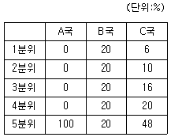
- A국은 B국보다 소득분배가 상대적으로 평등하다.
- B국은 C국보다 소득분배가 상대적으로 불평등하다.
- C국의 십분위분배율은 1/8이다.
- A국의 지니계수는 0이다.
- B국의 지니계수는 A국의 지니계수보다 작다.
(정답률: 알수없음)
59. 다음 표는 이동통신시장을 양분하고 있는 甲과 乙의 전략(저가요금제와 고가요금제)에 따른 보수행렬이다. 甲과 乙이 전략을 동시에 선택하는 일회성 게임에 관한 설명으로 옳지 않은 것은?(단, 괄호 속의 왼쪽은 甲의 보수, 오른쪽은 乙의 보수를 나타낸다.)
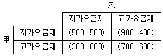
- 甲은 乙의 전략과 무관하게 저가요금제를 선택하는 것이 합리적이다.
- 甲이 고가요금제를 선택할 것으로 乙이 예상하는 경우 乙은 고가요금제를 선택하는 것이 합리적이다.
- 甲과 乙의 합리적 선택에 따른 결과는 파레토 효율적이지 않다.
- 내쉬균형(Nash equilibrium)이 한 개 존재한다.
- 乙에게는 우월전략이 존재한다.
(정답률: 알수없음)
60. 중고차 시장에서 품질에 대한 정보의 비대칭성이 존재하는 경우 나타날 수 있는 현상으로 옳은 것을 모두 고른 것은?
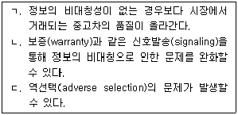
- ㄱ
- ㄴ
- ㄱ, ㄴ
- ㄴ, ㄷ
- ㄱ, ㄴ, ㄷ
(정답률: 알수없음)
61. 거시경제변수에 관한 설명으로 옳지 않은 것은?
- GDP는 유량(flow)변수이다.
- GDP 디플레이터는 실질GDP를 명목GDP로 나눈 것으로 그 경제의 물가수준을 나타낸다.
- 기준연도의 명목GDP와 실질GDP는 같다.
- 외국인의 한국 내 생산활동은 한국의 GDP 산출에 포함된다.
- 소비, 투자, 정부지출(구입), 순수출이 GDP를 구성하는 네 가지 항목이다.
(정답률: 알수없음)
62. 쌀과 컴퓨터만 생산하는 국가의 생산량과 가격이 다음과 같다. 2013년을 기준연도로 할 때 2014년의 실질GDP와 실질GDP성장률은?
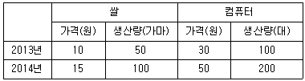
- 3,500원, 100 %
- 3,500원, 228.6 %
- 7,000원, 100 %
- 7,000원, 228.6 %
- 11,500원, 64.3 %
(정답률: 알수없음)
63. 소비이론에 관한 설명으로 옳지 않은 것은?
- 절대소득가설에 의하면 소비의 이자율탄력성은 0이다.
- 절대소득가설에 의하면 기초소비가 있는 경우, 평균소비성향이 한계소비성향보다 크다.
- 항상소득가설에 의하면 임시소비는 임시소득에 의해 결정된다.
- 상대소득가설에 의하면 장기소비함수는 원점을 통과하는 직선의 형태로 도출된다.
- 생애주기가설에 의하면 사람들은 일생에 걸친 소득 변화 양상을 염두에 두고 적절한 소비수준을 결정한다.
(정답률: 알수없음)
64. 甲기업이 새로운 투자프로젝트 비용으로 현재 250원을 지출하였다. 1년 후 120원, 2년 후 144원의 수익을 얻을 수 있다. 연간 시장이자율(할인율)이 20 %일 때, 이 투자프로젝트의 순현재 가치(Net Present Value)는?
- -50원
- -30원
- -3원
- 14원
- 50원
(정답률: 알수없음)
65. 경제 내의 생산가능연령인구가 3,000만명이다. 이 중 취업자는 1,500만명, 실업자는 500만명이다. 이 경제의 경제활동인구, 실업률, 고용률은 각각 얼마인가?
- 2,000만명, 20 %, 50 %
- 2,000만명, 25 %, 50 %
- 2,000만명, 30 %, 75 %
- 3,000만명, 25 %, 75 %
- 3,000만명, 30 %, 75 %
(정답률: 알수없음)
66. 폐쇄경제의 IS-LM 모형에서 정부는 지출을 증가시키고, 중앙은행은 통화량을 증가시켰다. 이 경우 나타나는 효과로 옳은 것은? (단, IS곡선은 우하향, LM곡선은 우상향한다.)
- 국민소득은 증가하고, 이자율은 하락한다.
- 국민소득은 증가하고, 이자율은 상승한다.
- 국민소득은 증가하고, 이자율의 변화 방향은 알 수 없다.
- 국민소득은 감소하고, 이자율은 상승한다.
- 국민소득은 감소하고, 이자율의 변화 방향은 알 수 없다.
(정답률: 알수없음)
67. 甲은행의 대차대조표는 요구불예금 5,000만원, 지급준비금 1,000만원, 대출금 4,000만원으로만 구성되어 있다. 법정지급준비율이 5 %라면 甲은 행이 보유하고 있는 초과지급준비금은?
- 250만원
- 500만원
- 600만원
- 750만원
- 800만원
(정답률: 알수없음)
68. 다음 중 옳은 것을 모두 고른 것은? (단, 피셔효과가 성립한다.)
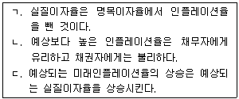
- ㄱ
- ㄴ
- ㄱ, ㄴ
- ㄱ, ㄷ
- ㄴ, ㄷ
(정답률: 알수없음)
69. A국 경제가 유동성함정(LM곡선이 수평)에 빠졌을 경우, 이에 관한 설명으로 옳은 것은?
- 투자가 이자율에 대해 매우 탄력적이다.
- 확대통화정책이 확대재정정책보다 국민소득을 더 많이 증가시킨다.
- 확대재정정책을 시행하면 구축효과로 인해 국민소득의 변화가 없다.
- 화폐수요가 이자율에 대해 완전비탄력적이다.
- 확대통화정책을 시행하더라도 이자율의 변화가 없다.
(정답률: 알수없음)
70. 한 나라의 거시경제모형이 다음과 같을 때, 생산물시장과 화폐시장이 동시에 균형을 이루는 국민소득은? (단, Y는 국민소득, r은 이자율, YD는 가처분소득이다.)
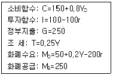
- 250
- 1,200
- 1,250
- 1,500
- 3,000
(정답률: 알수없음)
71. 통화량을 증가시키기 위한 중앙은행의 정책으로 ( )안에 들어갈 내용을 순서대로 옳게 연결한 것은?
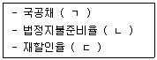
- ㄱ: 매입, ㄴ: 인하, ㄷ: 인하
- ㄱ: 매입, ㄴ: 인하, ㄷ: 인상
- ㄱ: 매각, ㄴ: 인하, ㄷ: 인상
- ㄱ: 매각, ㄴ: 인상, ㄷ: 인하
- ㄱ: 매각, ㄴ: 인상, ㄷ: 인상
(정답률: 알수없음)
72. 총수요곡선을 왼쪽으로 이동시키는 요인을 모두 고른 것은?
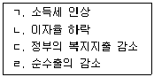
- ㄱ, ㄴ
- ㄱ, ㄷ
- ㄱ, ㄴ, ㄹ
- ㄱ, ㄷ, ㄹ
- ㄴ, ㄷ, ㄹ
(정답률: 알수없음)
73. 단기 또는 장기 총공급곡선을 오른쪽으로 이동시키는 요인으로 옳지 않은 것은?
- 물적자본 증가
- 노동인구 증가
- 기술지식 진보
- 예상 물가수준 하락
- 자연실업률 상승
(정답률: 알수없음)
74. 각 경제학파별 경제안정화정책에 관한 설명으로 옳지 않은 것은?
- 고전학파는 구축효과, 화폐의 중립성을 들어 경제안정화정책을 쓸 필요가 없다고 주장한다.
- 케인즈경제학자(Keynesian)는 IS곡선이 가파르고, LM곡선은 완만하므로 적극적인 재정정책이 경제안정화정책으로 바람직하다고 주장한다.
- 통화주의자(Monetarist)는 신화폐수량설, 자연실업률 가설을 들어 재량적인 경제안정화정책을 주장한다.
- 새고전학파(New Classical School)는 예상치 못한 경제안정화정책은 일시적으로 유효할 수 있다는 점을 인정한다.
- 새케인즈학파(New Keynesian School)는 임금과 물가가 경직적인 경우에는 경제안정화정책이 유효하다고 주장한다.
(정답률: 알수없음)
75. 오쿤의 법칙(Okun's Law)에 따라 실업률이 1% 포인트 증가하면 실질GDP는 약 2 % 포인트 감소한다고 가정하자. 만약, 중앙은행이 화폐공급 증가율을 낮추어 인플레이션율은 10 %에서 8 %로 하락하였으나 실업률은 4 %에서 8 %로 증가하였을 경우, 희생비율(sacrifice ratio)은? (단,
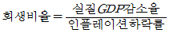
이다.)- 약 2
- 약 4
- 약 6
- 약 8
- 약 10
(정답률: 알수없음)
76. 2015년 현재 우리나라 경기종합지수 중 동행종합지수의 구성지표로 옳은 것은?
- 구인구직비율
- 코스피지수
- 장단기금리차
- 광공업생산지수
- 생산자제품재고지수
(정답률: 알수없음)
77. 甲국의 생산함수는 Y=AK1/3L2/3이다. 노동자 1인당 생산량증가율이 10 %이고, 총요소생산성증가율은 7 %일 경우, 성장회계에 따른 노동자 1인당 자본량증가율은? (단, Y는 총생산량, A는 총 요소생산성, K는 자본량, L은 노동량이다.)
- 3 %
- 4.5 %
- 6 %
- 7 %
- 9 %
(정답률: 알수없음)
78. 甲국과 乙국의 무역 개시 이전의 X재와 Y재에 대한 단위당 생산비가 다음과 같다. 무역을 개시 하여 두 나라 모두 이익을 얻을 수 있는 교역조건(PX/PY)에 해당하는 것은? (단, PX는 X재의 가격이고, PY는 Y재의 가격이다.)
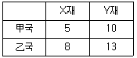
- 0.45
- 0.55
- 0.65
- 0.75
- 0.85
(정답률: 알수없음)
79. 국제수지표의 경상수지에 포함되는 거래가 아닌것은?
- 외국인의 국내주식 구입
- 해외교포의 국내송금
- 재화의 수출입
- 정부 간 무상원조
- 외국인의 국내관광 지출
(정답률: 알수없음)
80. 원/달러 명목환율, 한국과 미국의 물가지수가 다음과 같다. 2013년을 기준연도로 하였을 때, 2014년의 원/달러 실질환율의 변화는?
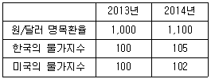
- 불변
- 3 % 하락
- 3 % 상승
- 7 % 하락
- 7 % 상승
(정답률: 알수없음)